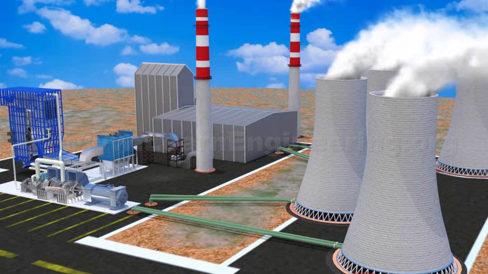

Thermal power plants use water as working fluid. Nuclear and coal based power plants fall under this category. The way energy from fuel gets transformed into electricity forms the working of a power plant. In a thermal power plant a steam turbine is rotated with help of high pressure and high temperature steam and this rotation is transferred to a generator to produce electricity. Steam turbine is the heart of the power plant. The purpose of this article is to give you a conceptual introduction on working of thermal power plants(refer Fig 1).
The working of a thermal power plant is explained in a logical step by step manner(refer Fig 2a).
You can take a closer look at the uniquely shaped steam turbine rotor blades(refer Fig 2b).
High capacity power plants often use different stages of steam turbines, such as high-pressure turbine, intermediate-pressure turbine and low-pressure turbines(refer Fig 3).
Energy absorption from steam
When turbine blades get rotated by high pressure high temperature steam, the steam loses its energy. This in turn will result in a low pressure and low temperature steam at the outlet of the turbine. Here steam is expanded till saturation point is reached. Since there is no heat addition or removal from the steam, ideally entropy of the steam remains same. This change is depicted in the following P-v and T-s diagrams(refer Fig 4). If we can bring this low pressure, low temperature steam back to its original state, then we can produce electricity continuously.
Use of condenser
Compressing a fluid which is in gaseous state requires a huge amount of energy, so before compressing the fluid it should be converted into liquid state. A condenser is used for this purpose, which rejects heat to the surrounding and converts steam into liquid. Ideally there will not be any pressure change during this heat rejection process, since the fluid is free to expand in a condenser. Changes in fluid are shown in the P-v and T-s diagram below (refer Fig 5).
The pump
At exit of the condenser fluid is in liquid state, so we can use a pump to raise the pressure. During this process the volume and temperature (2-3 deg. C rise) of fluid hardly changes, since it is in liquid state. Now the fluid has regained its original pressure(refer Fig 6).
Heat addition in boiler and rankine cycle
Here external heat is added to the fluid in order to bring fluid back to its original temperature (refer Fig 7). This heat is added through a heat exchanger called a boiler. Here the pressure of the fluid remains the same, since it is free to expand in heat exchanger tubes. Temperature rises and liquid gets transformed to vapor and regains its original temperature. This completes the thermodynamic cycle of a thermal power plant, called Rankine Cycle. This cycle can be repeated and continuous power production is possible.
Condenser heat rejection – cooling tower
In order to reject heat from the condenser a colder liquid should make contact with it. In a thermal power plant continuous supply of cold liquid is produced with the help of a cooling tower. Cold fluid from the cooling tower absorbs heat from a condenser and gets heated, this heat is rejected to the atmosphere via natural convection with the help of a cooling tower (refer Fig 8).
Boiler furnace for heat addition
Heat is added to the boiler with help of a boiler furnace. Here fuel reacts with air and produces heat. In a thermal power plant, the fuel can be either coal or nuclear. When coal is used as a fuel it produces a lot of pollutants which have to be removed before ejecting to the surroundings. This is done using a series of steps, the most important of them is an electro static precipitator (ESP) which removes ash particles from the exhaust (refer Fig 9). Now much cleaner exhaust is ejected into the atmosphere via a stack.
Optimizing a thermal plant performance
There are various flow parameters which have to be fine-tuned in order to get optimum performance from a thermal power plant. Lowering the condenser temperature or raising the average boiler temperature will result in a high efficiency power plant cycle according to the 2nd law of thermodynamics (carnot efficiency),most of the performance improving technologies are working on this idea. Some latest trends are listed below.
1. Expanding turbine after saturation
Expanding the steam in the turbine even after reaching the saturation point may be a dangerous affair. As the steam goes below saturation, wetness of the steam increases. These condensed water droplets collide with the turbine blades rotating at a high speed, thus it can cause extreme tip erosion to the blades. Turbine blade tip erosion is shown in figure below. But as you expand more you will be able to absorb more energy from the steam, thus increasing power plant efficiency. Up to 15% wetness level is considered to be safe for steam turbine operation. So most of the steam turbine will expand up to this point in order to extract maximum energy from the fluid as shown in Fig 10.
2. Raising average boiler temperature
If you can increase the average heat addition temperature of the boiler, that will result in a power plant with higher efficiency. One way to do this is to increase the compressor pressure. This will shift the saturation point of the fluid to a higher level, thus providing higher average temperature of heat addition (refer Fig 11). This is shown in the figure below. The blue line represents change in the cycle after raising the compressor pressure.
What is electrostatic precipitator (ESP)?
At the head addition side, the burning coal produces many pollutants. We cannot release these pollutants directly into the atmosphere, so before transferring them to a stack, the exhaust gas is cleaned in an electrostatic precipitator.
The ESP uses plates with high-voltage static electricity to absorb the pollutant particles (refer Fig 12b).
I hope you have learned how thermal power plants works. Thanks for reading!